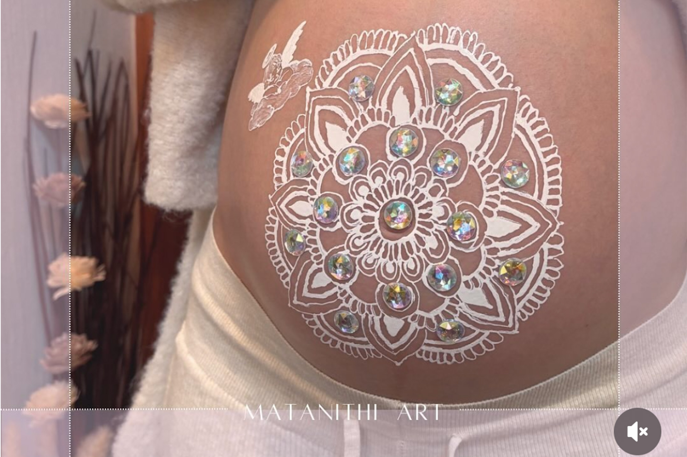
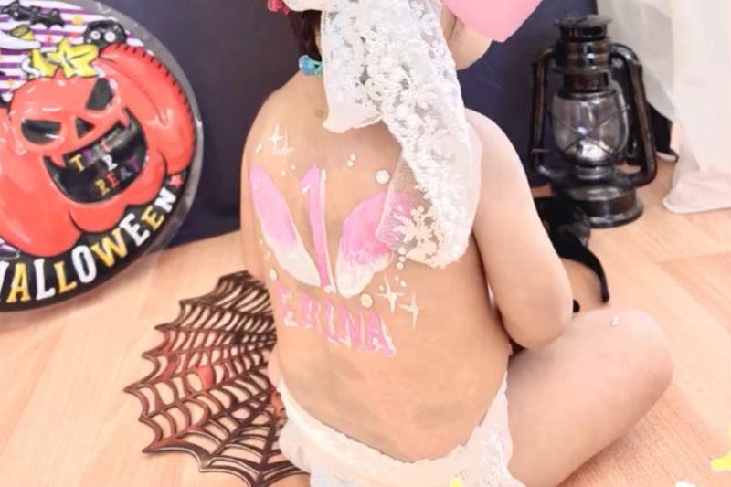
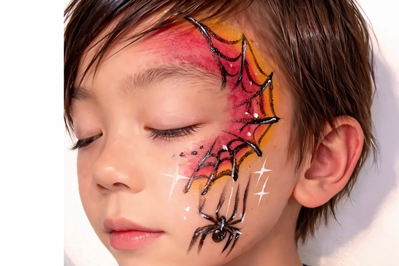
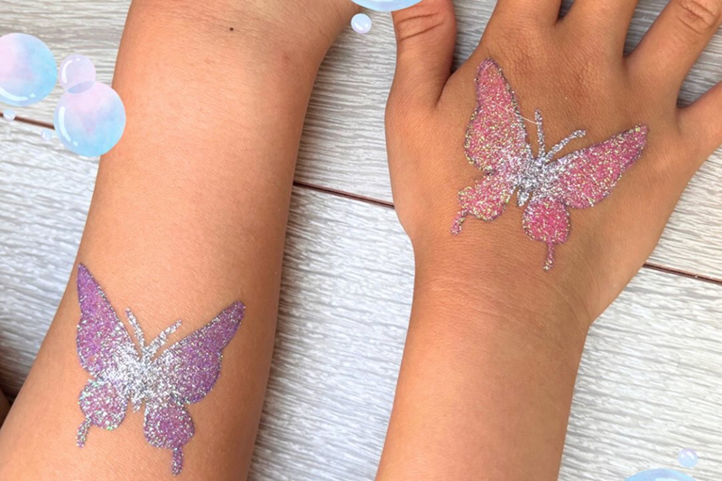
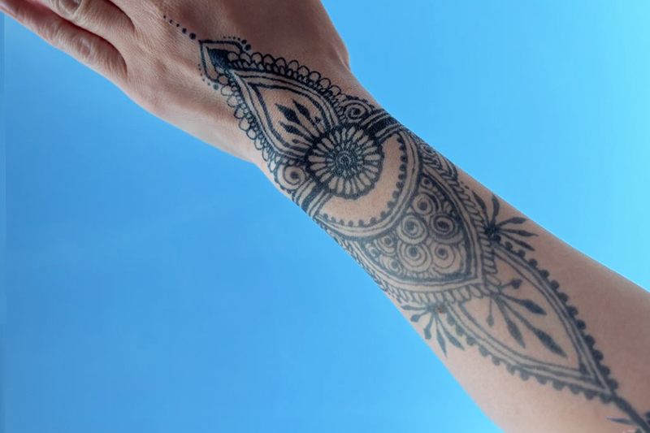
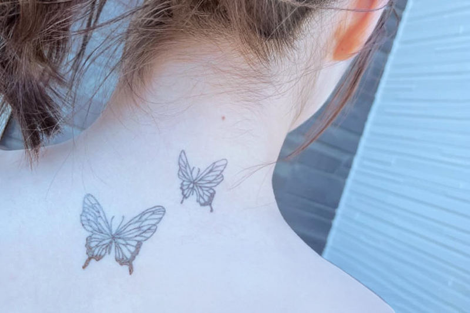
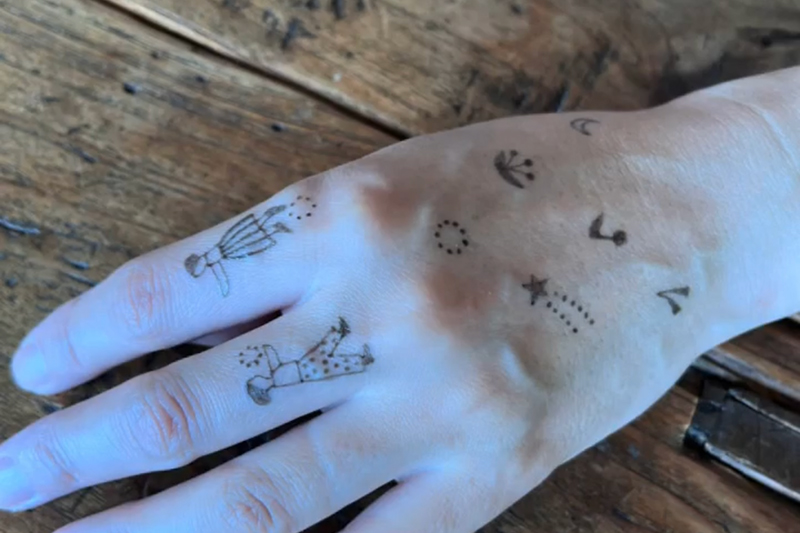
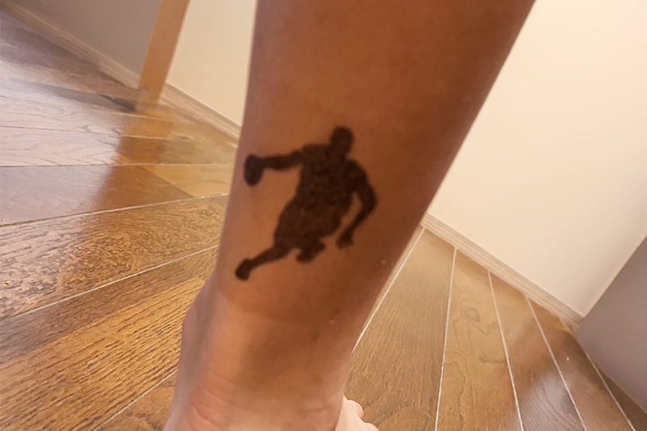

kobaco

ジャグアタトゥーやヘナペイントなど、さまざまなボディーアートを行っています。イベントや特別な日のアクセントとしてはもちろん、「今の自分を表現したい」「思い出を形に残したい」という方にもおすすめです。 気軽に楽しめるアートとして、一人ひとりの想いや個性に寄り添ったデザインをご提案いたします。世界にひとつだけのボディーアートをぜひお楽しみください。
ボディペイントは、イベントや記念日の思い出づくりとしてご依頼いただくことが多く、お客様一人ひとりの想いやイメージに合わせたデザインをご提案しています。具体的なデザインが決まっていなくても、「こんな雰囲気にしたい」といったイメージをお聞かせいただければ、ご希望に沿ったオリジナルデザインを制作いたします。
施術は当店での対応はもちろん、イベント会場やご自宅への出張も承っております。特別な日をより印象深く彩るボディーアートを、ぜひお気軽にご相談ください。

MATERNITY PAINT
お腹に華やかなイラストを
妊娠中のお腹にカラフルでかわいい絵を描くことで、安産のおまじないとして海外ではよく行われています。生まれてくる赤ちゃんとの大切な思い出に。ご希望されるデザインにお応えします。カメラマンによる記念撮影も事前予約可能。

BABY PAINT
かけがえのない愛おしい時間
赤ちゃんの背中に安心・安全な絵の具で「うまれてきてくれてありがとう」の想いを描くアートです。この一瞬が、家族の最高の思い出になり、写真として残ることで、赤ちゃんが大きくなったとき、自分が愛されていた証となります。

FACE PEINT
イベントでも出張いたします
小さなイラストやマークを描くものから顔全体に模様などを描いて楽しむアートです。イベントや季節に合わせたデザインにすることも可能です。顔に描くのに抵抗のある方には、腕や足にワンポイントで描くことも可能です。水性で石けんと水で簡単に落とせる優しい絵の具を使用しております。

BODY PEINT
ボディジュエリー
専用の肌用グリッターなどを密着させ、キラキラとした美しいデザインを描くボディーアートです。ウエディングやダンスの発表会など華やかに彩る定番のスタイルです。耐水性がありますので、水着を着る際にファッションのアクセントにも人気です。
ジャグアタトゥーとは、フルーツの果汁から作られたインクで肌を染める人気のフェイクタトゥーです。針を使わず痛みは一切なく、本物のタトゥーのような紺色に発色します。肌のターンオーバーとともに約10日から2週間ほどで自然に消えるのが特徴で、旅行やイベント、フェスなどの期間限定で楽しみたい人に最適です。
デザインを豊富にご用意しております。その中からお好きなデザインを選んでいただき、好きな場所に施術いたします。発色まで約24時間かかるため、予定日よりも早めに描くのがポイント。事前にご相談ください。また、天然由来で、基本的には身体にやさしい染料ですがまれに体質に合わないこともあります。事前にアレルギーについてご質問いたします。

エスニックデザイン
優美で装飾的なデザイン
ヘナタトゥーに見られる曼荼羅やペイズリーなど、古くから祝福や魔除け、幸運への願いが込められてきたモチーフを取り入れたデザインもお楽しみいただけます。繊細な模様が描き出す美しいアートは、まるで身にまとう装飾品のような存在感。 手元や足元に描かれたデザインは、日常を少し特別に彩り、自分らしさを表現するアクセントにもなります。

蝶々や月などのモチーフ柄
HTML, CSS, JS, WordPress
蝶々や月をはじめとする人気モチーフは、繊細なものから存在感のあるものまでさまざまなデザインをご用意しています。首元やデコルテ、足首などに添えるだけで、よりオシャレ度アップ。 ひとつだけさりげなく描くのも素敵ですが、複数のモチーフを散りばめたアレンジも人気。肌見せが増える夏だからこそ楽しめる、新しいファッションのアクセントとして取り入れてみませんか。

ミニマルタトゥー
アクセサリー感覚でさりげなく
トレンドの韓国風レタリングやワンポイントタトゥーも可能です。線が細く可愛いミニマリストタトゥはよりアクセサリー感覚で楽しめますので、手や首など見えやすい場所におすすめ。シンプルで象徴的なモチーフなど、ライフスタイルに合わせて選べる手軽さも魅力です。

イラストデザイン
特別な体験として
お子様には、好きなキャラクターやスポーツチームのモチーフ、かわいいイラストデザインが大人気。自分だけの特別なアートを身につけることで、イベントのワクワク感をさらに盛り上げてくれます。 デザインは約10日ほどで自然に消えるため、気軽に楽しめるのも魅力のひとつ。お祭りやマルシェ、スポーツイベント、誕生日会など、さまざまなシーンでご好評いただいています。